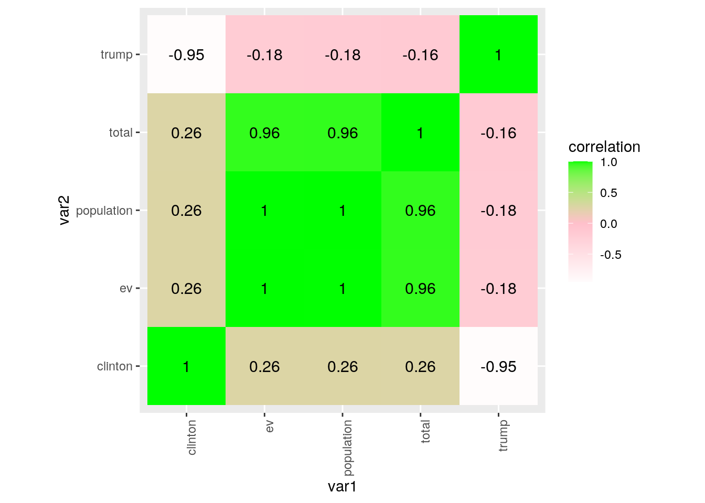
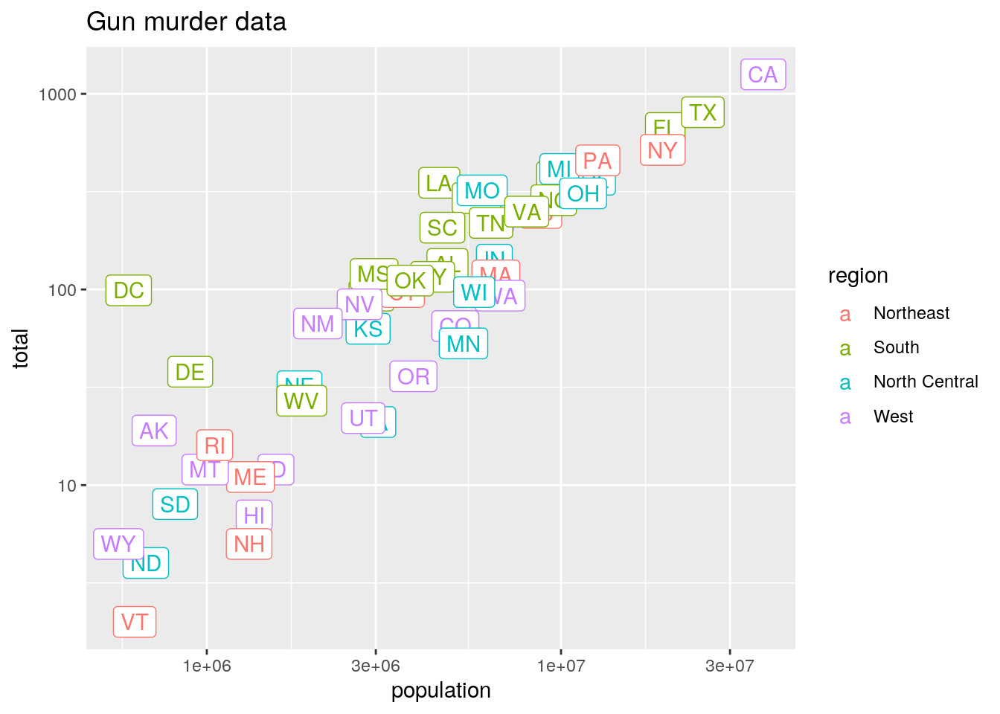
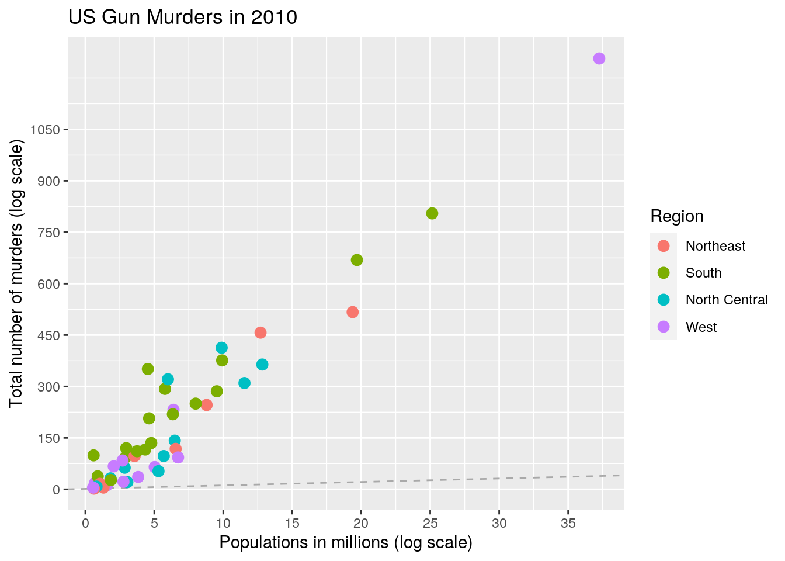
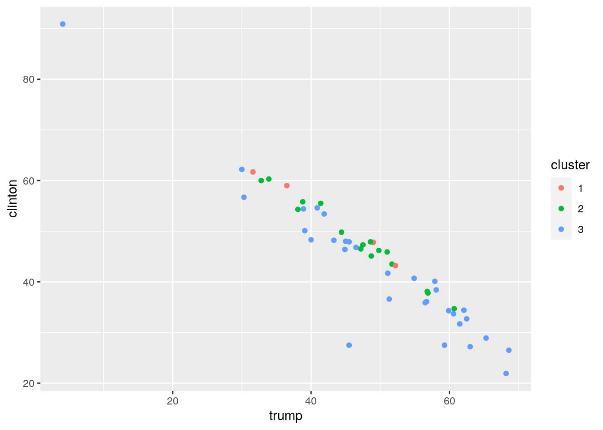

I chose two data sets that reflect conditions in the year 2016, across all states. I basically wanted to look at how violence effected the voting patterns of each state, so I chose to use a data set that had a recorderd total murders in 2016 for each state, and a seperate data set that showcased the percentage of electoral votes that went to Biden versus Trump for each state. These data sets also have abbreviations and population size for each state.
library(dslabs)
# data_frame('murders')
# data_frame('results_us_election_2016')
head(murders)## state abb region population total
## 1 Alabama AL South 4779736 135
## 2 Alaska AK West 710231 19
## 3 Arizona AZ West 6392017 232
## 4 Arkansas AR South 2915918 93
## 5 California CA West 37253956 1257
## 6 Colorado CO West 5029196 65head(results_us_election_2016)## state electoral_votes clinton trump others
## 1 California 55 61.7 31.6 6.7
## 2 Texas 38 43.2 52.2 4.5
## 3 Florida 29 47.8 49.0 3.2
## 4 New York 29 59.0 36.5 4.5
## 5 Illinois 20 55.8 38.8 5.4
## 6 Pennsylvania 20 47.9 48.6 3.6library(dplyr)
project <- left_join(murders, results_us_election_2016, by = "state") %>%
select(-others) %>% rename(ev = electoral_votes)
head(project)## state abb region population total ev clinton trump
## 1 Alabama AL South 4779736 135 9 34.4 62.1
## 2 Alaska AK West 710231 19 3 36.6 51.3
## 3 Arizona AZ West 6392017 232 11 45.1 48.7
## 4 Arkansas AR South 2915918 93 6 33.7 60.6
## 5 California CA West 37253956 1257 55 61.7 31.6
## 6 Colorado CO West 5029196 65 9 48.2 43.3library(dplyr)
library(dslabs)
library(tidyr)
gbregion <- project %>% group_by(region) %>% summarize_if(is.numeric,
c(mean = mean, sd = sd))
head(gbregion)## # A tibble: 4 x 11
## region population_mean total_mean ev_mean clinton_mean trump_mean
## <fct> <dbl> <dbl> <dbl> <dbl> <dbl>
## 1 North… 6146360 163. 10.7 53.7 40.1
## 2 South 6804378. 247. 11.5 44.0 51.6
## 3 North… 5577250. 152. 9.83 40.5 53
## 4 West 5534273. 147 9.85 43.6 45.9
## # … with 5 more variables: population_sd <dbl>, total_sd <dbl>, ev_sd <dbl>,
## # clinton_sd <dbl>, trump_sd <dbl>project %>% group_by(region) %>% summarize_if(is.numeric, c(mean = mean,
sd = sd)) %>% pivot_longer(-region) %>% separate(name, into = c("var",
"stat"))## # A tibble: 40 x 4
## region var stat value
## <fct> <chr> <chr> <dbl>
## 1 Northeast population mean 6146360
## 2 Northeast total mean 163.
## 3 Northeast ev mean 10.7
## 4 Northeast clinton mean 53.7
## 5 Northeast trump mean 40.1
## 6 Northeast population sd 6469174.
## 7 Northeast total sd 200.
## 8 Northeast ev sd 8.94
## 9 Northeast clinton sd 4.94
## 10 Northeast trump sd 6.16
## # … with 30 more rowsfilter(project, region == "south") %>% summarise(mean = mean(project$total))## mean
## 1 184.3725topten <- project %>% arrange(desc(population), .by_group = TRUE) %>%
slice(1:10)
head(topten)## state abb region population total ev clinton trump
## 1 California CA West 37253956 1257 55 61.7 31.6
## 2 Texas TX South 25145561 805 38 43.2 52.2
## 3 Florida FL South 19687653 669 29 47.8 49.0
## 4 New York NY Northeast 19378102 517 29 59.0 36.5
## 5 Illinois IL North Central 12830632 364 20 55.8 38.8
## 6 Pennsylvania PA Northeast 12702379 457 20 47.9 48.6murders <- project %>% mutate(murders, rate = total/population *
1e+05)
head(murders)## state abb region population total ev clinton trump rate
## 1 Alabama AL South 4779736 135 9 34.4 62.1 2.824424
## 2 Alaska AK West 710231 19 3 36.6 51.3 2.675186
## 3 Arizona AZ West 6392017 232 11 45.1 48.7 3.629527
## 4 Arkansas AR South 2915918 93 6 33.7 60.6 3.189390
## 5 California CA West 37253956 1257 55 61.7 31.6 3.374138
## 6 Colorado CO West 5029196 65 9 48.2 43.3 1.292453murders %>% select(state, region, rate) %>% filter(rate <= 0.71)## state region rate
## 1 Hawaii West 0.5145920
## 2 Iowa North Central 0.6893484
## 3 New Hampshire Northeast 0.3798036
## 4 North Dakota North Central 0.5947151
## 5 Vermont Northeast 0.3196211## using summarize
us_murder_rate <- project %>% summarize(rate = sum(total)/sum(population) *
1e+05)
us_murder_rate## rate
## 1 3.034555summarize(project, mean(population))## mean(population)
## 1 6075769project %>% filter(region == "south") %>% summarize(average = mean(project$trump,
na.rm = T), standard_deviation = sd(project$trump, na.rm = TRUE))## average standard_deviation
## 1 48.45098 11.95812project %>% group_by(region) %>% summarize(median = median(clinton),
minimum = min(clinton), maximum = max(clinton))## # A tibble: 4 x 4
## region median minimum maximum
## <fct> <dbl> <dbl> <dbl>
## 1 Northeast 54.6 46.8 60
## 2 South 40.7 26.5 90.9
## 3 North Central 39.9 27.2 55.8
## 4 West 47.9 21.9 62.2project %>% group_by(region) %>% summarize(range = quantile(ev,
c(0, 0.5, 1)))## # A tibble: 12 x 2
## # Groups: region [4]
## region range
## <fct> <dbl>
## 1 Northeast 3
## 2 Northeast 7
## 3 Northeast 29
## 4 South 3
## 5 South 9
## 6 South 38
## 7 North Central 3
## 8 North Central 10
## 9 North Central 20
## 10 West 3
## 11 West 6
## 12 West 55project %>% group_by(region) %>% summarize(median_rate = median(population))## # A tibble: 4 x 2
## region median_rate
## <fct> <dbl>
## 1 Northeast 3574097
## 2 South 4625364
## 3 North Central 5495456.
## 4 West 2700551project %>% group_by(region) %>% summarize(n())## # A tibble: 4 x 2
## region `n()`
## <fct> <int>
## 1 Northeast 9
## 2 South 17
## 3 North Central 12
## 4 West 13summarise(project, states = n_distinct(abb), count = n())## states count
## 1 51 51project %>% group_by(region) %>% summarize(median_yearly_murder_rate = median(total))## # A tibble: 4 x 2
## region median_yearly_murder_rate
## <fct> <dbl>
## 1 Northeast 97
## 2 South 207
## 3 North Central 80
## 4 West 36project %>% group_by(state) %>% summarize(avg_votes = mean(ev),
n = n()) %>% mutate(state = as.character(state))## # A tibble: 51 x 3
## state avg_votes n
## <chr> <dbl> <int>
## 1 Alabama 9 1
## 2 Alaska 3 1
## 3 Arizona 11 1
## 4 Arkansas 6 1
## 5 California 55 1
## 6 Colorado 9 1
## 7 Connecticut 7 1
## 8 Delaware 3 1
## 9 District of Columbia 3 1
## 10 Florida 29 1
## # … with 41 more rowslibrary(tidyverse)
library(tidyr)
library(dplyr)
library(lubridate)
cormat <- project %>% select_if(is.numeric) %>% cor(use = "pair")
cormat %>% round(2)## population total ev clinton trump
## population 1.00 0.96 1.00 0.26 -0.18
## total 0.96 1.00 0.96 0.26 -0.16
## ev 1.00 0.96 1.00 0.26 -0.18
## clinton 0.26 0.26 0.26 1.00 -0.95
## trump -0.18 -0.16 -0.18 -0.95 1.00cormat %>% as.data.frame %>% rownames_to_column("var1") %>% pivot_longer(-1,
"var2", values_to = "correlation") %>% ggplot(aes(var1, var2,
fill = correlation)) + geom_tile() + scale_fill_gradient2(low = "white",
mid = "pink", high = "green") + geom_text(aes(label = round(correlation,
2)), color = "black", size = 4) + theme(axis.text.x = element_text(angle = 90,
hjust = 1)) + coord_fixed()
p <- project %>% ggplot(aes(population, total, label = abb, color = region)) +
geom_label()
p + scale_x_log10() + scale_y_log10() + ggtitle("Gun murder data")
r <- murders %>% summarize(rate = sum(total)/sum(population) *
10^6) %>% pull(rate)
project %>% ggplot(aes(population/10^6, total, label = abb)) +
geom_abline(intercept = log10(r), lty = 2, color = "darkgrey") +
geom_point(aes(col = region), size = 3) + scale_x_log10() +
scale_y_log10() + xlab("Populations in millions (log scale)") +
ylab("Total number of murders (log scale)") + ggtitle("US Gun Murders in 2010") +
scale_color_discrete(name = "Region") + scale_x_continuous(breaks = round(seq(min(0),
max(40), by = 5), 1)) + scale_y_continuous(breaks = round(seq(min(0),
max(1100), by = 150), 1))
library(tidyverse)
library(cluster)
# project
clust_dat <- project %>% select(population, trump, clinton)
set.seed(348)
kmeans1 <- clust_dat %>% kmeans(3)
kmeans1## K-means clustering with 3 clusters of sizes 4, 16, 31
##
## Cluster means:
## population trump clinton
## 1 25366318 42.32500 52.92500
## 2 8321570 46.76875 48.04375
## 3 2427543 50.10968 42.05484
##
## Clustering vector:
## [1] 3 3 2 3 1 3 3 3 3 1 2 3 3 2 2 3 3 3 3 3 2 2 2 3 3 2 3 3 3 3 2 3 1 2 3 2 3 3
## [39] 2 3 3 3 2 1 3 3 2 2 3 2 3
##
## Within cluster sum of squares by cluster:
## [1] 2.094706e+14 9.222656e+13 6.994668e+13
## (between_SS / total_SS = 84.2 %)
##
## Available components:
##
## [1] "cluster" "centers" "totss" "withinss" "tot.withinss"
## [6] "betweenss" "size" "iter" "ifault"kmeansclust <- clust_dat %>% mutate(cluster = as.factor(kmeans1$cluster))
kmeansclust %>% ggplot(aes(trump, clinton, color = cluster)) +
geom_point() This clustering shows that the states with the bigger populations, such as California, or New York, were more likley to vote for Clinton, while the smaller states were the least likely to vote for Clinton. I can not think of a reason that this would be, besides the confounding fact that all of the huge states, with the exception of Texas, are fairly liberal states. There was one outlier small state that did vote heavily democratic, DC - probably due to the fact that alot of political families reside there, and they usually know how to vote correctly.